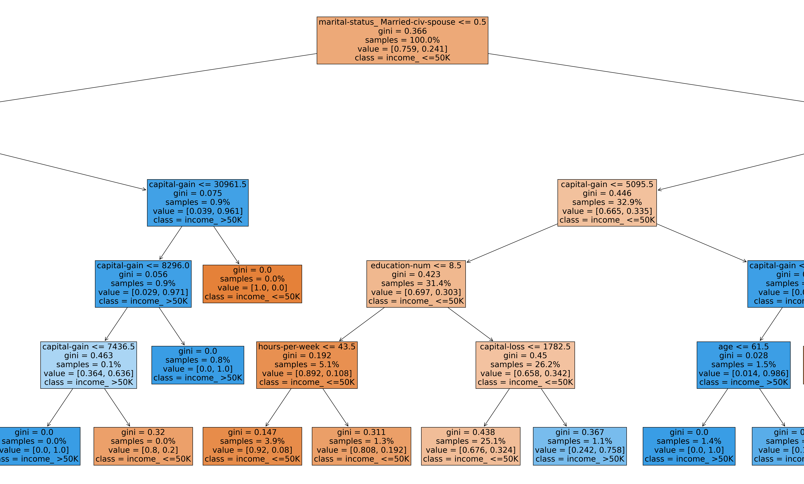
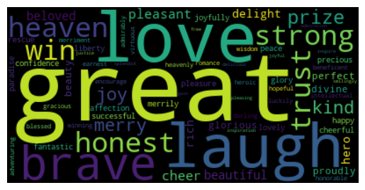

MaxEnt Archaeogical Prediction Model (WIP)

This project attempts to generate a prediction map of prehistoric archaeological sites in northwest Hong Kong using the MaxEnt algorithm(see more...) see also on SVM Model
Income Prediction with US census Data - Decision Tree and SVM

Decision Tree and SVM machine learning prediction of income through US census data. Census Income Data obtained from UC Irvine Machine Learning Repository. Both models are are accurate in prediction.(see more...)
Sentiment Analysis of Westward Ho!

Sentiment Analysis of Amyas Leigh and Frank Leigh in Westward Ho! Written by Charles Kingsley(see more...)